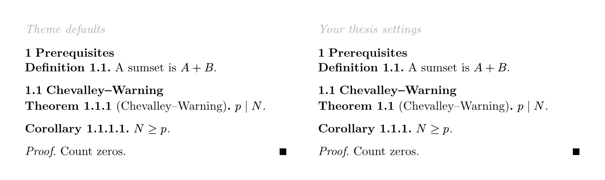
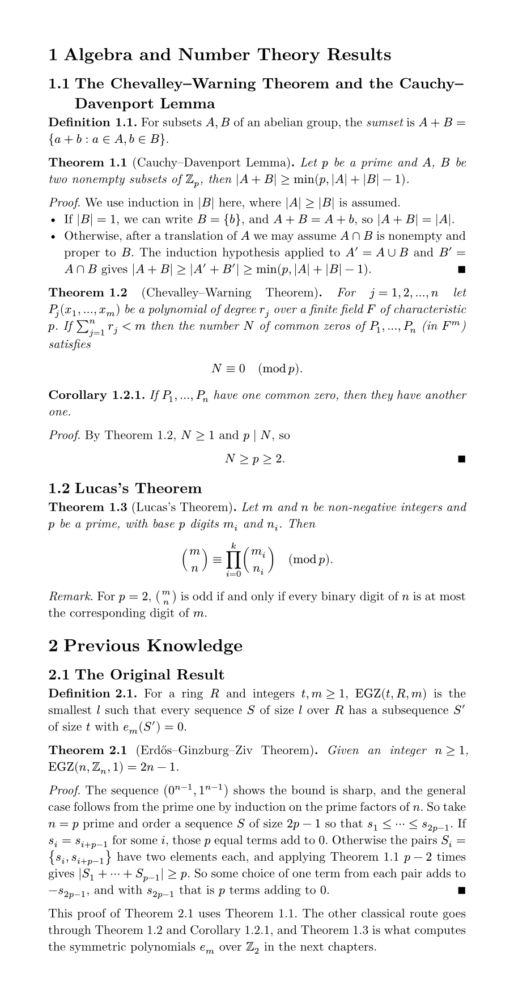

Theorems and proofs
Lesson 4 · your amsthm setup rebuilt with a Universe package, numbered by chapter, with QED and cross-references
Your thesis preamble (main_ppgco_ufu.tex) has the usual amsthm block: \newtheorem{theorem}{Theorem}[chapter], lemmas and propositions sharing that counter, corollaries numbered under their theorem, definitions on their own counter per chapter, an unnumbered remark, and proof with a \blacksquare. Typst has no theorem environment built in. You get one from a package, and the package's AMS theme reproduces that block in about ten lines. By the end you will have your Chevalley–Warning and EGZ passages numbered exactly like the thesis.
Loading a package
#import "@preview/ctheorems:2.0.0": *
#import thm-themes.ams: *
#show: thm-rules- Line 1.
@previewis the Typst Universe namespace. An import names a namespace, a package and a version, and the version is required (scripting reference, Packages). Typst downloads the package on the first compile and caches it (under~/snap/typst/current/.cache/typst/packagesfor your snap install), so there is notlmgrstep and later compiles work offline (typst/packages README). - Line 2. The package contains a module of ready-made environments in the amsthm styles. This imports
theorem,lemma,proposition,corollary,definition,example,remark,proofand a few others (package page). - Line 3. A "show everything" rule, as in Lesson 2. It sets up references and QED placement for the rest of the file, so it goes before the first theorem. The default QED symbol is Typst's
$qed$, ∎, which matches your\blacksquare. For amsthm's default □, writethm-rules.with(qed-symbol: $square$).
Why ctheorems: it is one of the oldest and most used theorem packages, version 2.0.0 came out on 17 September 2026, and it ships an amsthm-style theme, so your thesis look needs no styling work. The alternatives, theorion (coloured boxes, multilingual) and lemming, are worth a look once this one feels routine.
Writing environments
| LaTeX | Typst |
|---|---|
\begin{lemma} … \end{lemma} | #lemma[ … ] |
\begin{theorem}[Euler] … | #theorem[Euler][ … ] |
\label{chev} | #theorem[ … ] <chev> |
\cref{chev} | @chev → Theorem 1.2 |
A name is a second content block before the body. With one block, that block is the body: #theorem[Euler] is a theorem whose statement is "Euler". Labels go after the closing bracket, as you did with equations in Lesson 1. A reference prints the word and the number by itself, as cleveref did. There is no Theorem~\ref.
Proofs
#proof[
By @chev, $N >= 1$ and $p divides N$.
]
// QED on the equation's line, like \qedhere
#proof[
$ N >= p >= 2. #qedhere $
]
// \begin{proof}[Proof of Theorem 1.2]
#proof[of @chev][ … ]The QED symbol is added at the end automatically. If the proof ends with a display equation or a list, the symbol lands on a line of its own; put #qedhere as the last thing inside that equation or list item.
Numbering: why the default is 1.1.1

A theorem number is a numbering pattern applied to a list of values: the heading counter, then the theorem count. The theme's pattern is "1.1". Recall the rule from reference 0002: one counting symbol per value, and when there are more values than symbols, the last symbol is repeated with its prefix.
By default the whole heading counter is used. In section 1.1 the values are (1, 1, 1), and "1.1" prints 1.1.1. The option base-level: 1 keeps only the chapter, so the values become (1, 1) and you get Theorem 1.1. That is [chapter] in \newtheorem.
Predict first, then open. Assume #set heading(numbering: "1.1") and the third theorem of section 2.1.
Theme defaults
Values (2, 1, 3) → 2.1.3.
base-level: 1
Values (2, 3) → 2.3.
base-level: 1, numbering: "1"
Values (2, 3), one symbol with an empty prefix, repeated → 23. This is the heading trap from Lesson 2, back again.
base-level: 1, numbering: "I.1"
Values (2, 3) → II.3.
base: none
No prefix at all → 3. This is the right choice for short notes without chapters. Without heading numbering you would otherwise get Theorem 0.1, because unnumbered headings are not counted.
Counters: shared, separate, nested
In the theme, theorem, lemma, proposition and definition all use one counter named "Theorem", which is \newtheorem{lemma}[theorem]{Lemma}. Your thesis matches that for lemmas and propositions, but not for definitions. Three things to set:
- Every environment on a shared counter needs the same
base-level. When the prefix changes between two of them, the count restarts at 1. Redefine each one with.with, which you met in Lesson 2:#let theorem = theorem.with(base-level: 1) #let lemma = lemma.with(base-level: 1) #let proposition = proposition.with(base-level: 1) - A separate counter is just a different name.
\newtheorem{definition}{Definition}[chapter]counts on its own, so give it its own counter:#let definition = definition.with( counter: "Definition", base-level: 1, ) - Corollaries need nothing. The theme's
corollaryis numbered under the last theorem (1.2.1), using the theorem counter as itsbase. That is exactly your\newtheorem{corollary}{Corollary}[theorem].
Review from Lesson 3: guess the English word. You reached for prod last time. Typst names are full words with dot modifiers, not TeX abbreviations: product, infinity (or oo), union, inter, union.big, subset.eq, without. Beware inf: it exists, but it is the infimum. The full table is in reference 0003.
Check yourself
From memory. The last three questions revisit Lessons 2 and 3.
With the AMS theme loaded, what does #theorem[Fermat] render?
One block is always the body. The name is an extra block in front: #theorem[Fermat][…].
Heading numbering "1.1", theme defaults, no base-level. The third theorem of section 2.1 is numbered:
The default base keeps all heading levels: values (2, 1, 3), and the pattern's last symbol repeats with its dot.
The thesis setup has base-level: 1 on theorem but you forgot it on lemma. In section 1.1, right after Theorem 1.2, the lemma prints:
They share a counter, but the lemma's prefix is (1, 1) while the theorem's was (1). A changed prefix restarts the count at 1.
A proof ends with a display equation, and the □ sits alone on the next line. The fix:
#qedhere goes inside the last display equation or list item, and the automatic symbol is then skipped.
#set heading(numbering: "1"). How is subsection 3.2 numbered?
One counting symbol with an empty prefix. With two values, it is repeated with that empty prefix.
Which definition makes $sq(y)$ render y²?
One letter is a letter. Without the hash, the body prints t² whatever you pass.
The Typst name for \infty:
Guess the English word. inf exists but is the infimum operator, and the other two are unknown names. oo is a shorthand for ∞.
Practice: a thesis chapter with real environments
exercises/0004/starter.typ is your own text from prerequisites.tex and results.tex, shortened: Cauchy–Davenport, Chevalley–Warning, Lucas, and the original EGZ theorem. I added two definitions, a corollary and a remark so that every line of the preamble gets used. The math is already in Typst. Each // \begin{…} … // \end{…} comment pair marks an environment for you to create, and the header lists the thesis preamble you are reproducing. Copy it to attempt.typ and work there.
- Add the three package lines and compile. Wrap the first definition, the Cauchy–Davenport theorem and its proof. Look at the numbers before you change any options.
- Wrap the remaining environments, with names and labels. Then compare against the target in the header: Definition 1.1, Theorem 1.1, Theorem 1.2, Corollary 1.2.1, Theorem 1.3, Definition 2.1, Theorem 2.1.
- Fix the numbering with
base-level. Then give definitions their own counter. Leave the corollary alone and check that it is already right. - Two proofs end with a display or a list. Move their QED boxes up with
#qedhere. - Replace every hard-coded "Theorem 1.1", "Corollary 1.2.1" and so on with a reference (your thesis wrote bare
\ref{lucas}in places;@lucasalways includes the word). Then insert a dummy#lemma[x]at the top of the chapter and watch every number and reference update. Delete it afterwards.
Show the rendered solution

Read next
Primary source: the ctheorems manual (PDF, linked from the Universe page). Read the sections on counters and on restating; restating is how you would repeat a theorem's statement in an introduction, as thm-restate in thmtools did. Reading it also covers a mission goal: using a package from its own docs. When you open themes/ams.typ in the package, you will see that the whole theme is .with calls like the ones you just wrote.
Ask your teacher. If something is unclear, or you want a Portuguese supplement ("Teorema", "Demonstração") or a different look, ask in the chat. Run /teach me Typst to continue to Lesson 5: figures, tables and cross-references.